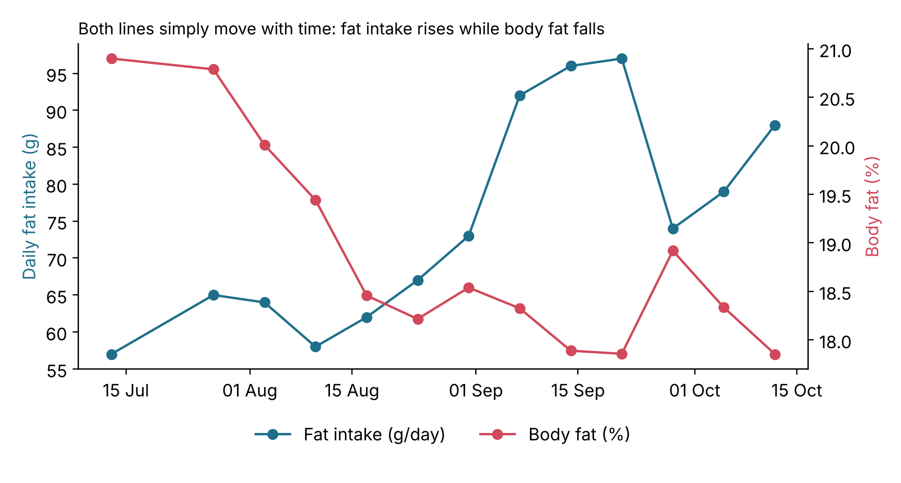
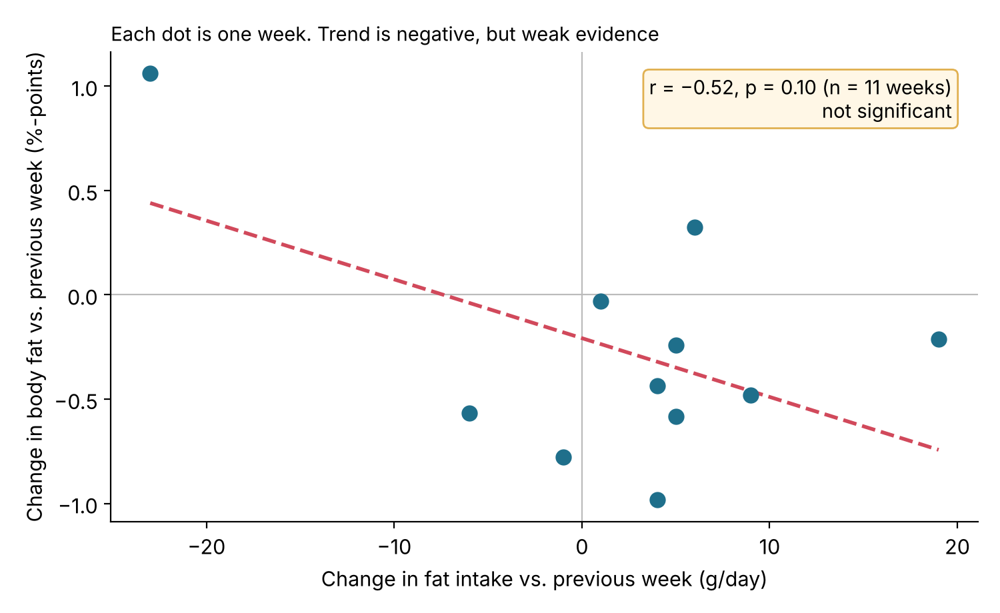

Does What I Eat Affect My Body and My Running?
Exploratory analysis · Python · Statistical tests
Health is the most valuable thing we have, and almost everyone needs to look after it, whether you are an entrepreneur, a parent, a student or an athlete. Sport is one of my passions, along with data science. In this analysis, I use my personal data to find out whether there is any correlation between the food I eat and my body weight and body composition, as well as my sports performance. If I can find a significant relationship, I can use it to improve them.
Research question
Does the food I eat have a positive or negative relationship with my body composition (weight and body fat) and my sports performance (running speed and running distance)?
Data used
- Food entries from the nutrition-tracking app Carbon
- Sports performance data from Garmin
- Data from Google Health Connect
- 100 days of data
Methodology
- Prepare data:
- Extract data from various sources.
- Classify each food into one of eight categories (e.g. banana and blueberry →
fruit):eggcoffeebread_grainplant_milkprotein_productveg_saladfruitoil
- Clean data (e.g. handle wrong and missing values).
- Run Pearson correlation tests.
- Build prediction models.
- Evaluate the results.
Findings
1. Some 20–30 years ago, many people wrongly believed that eating fat leads to more body fat. Science has since shown this to be untrue, and my data supports it: even with a higher fat intake, my weight and body fat did not increase. This indicates that increases in weight and body fat are driven by other factors, such as activity level and overall calorie intake.

In this chart and in my statistical test, a higher fat intake goes together with lower body fat. I wanted to dig deeper, because this could be a coincidence over time: I may simply have eaten more fat and lost body fat during the same period because of other factors, such as more sport or better sleep.
So I checked the correlation between the weekly change in fat intake and the weekly change in body fat. The new result:
- r = −0.52: still a negative tendency
- p = 0.10: the result is no longer significant

Conclusion: My weekly change in fat intake shows no significant impact on my weekly change in body fat.
Statistics and analytics are intriguing 🤩✨: it takes looking at a problem from several angles to find real insight, and that is what I love about it. 📊
2. There is no statistically significant correlation between my food intake and my running speed or distance. This is contrary to my assumption: I always thought that eating more carbohydrates or protein before training would improve my performance. My results show that sports performance has many other influencing factors besides food, such as the type of training (e.g. interval, Dauerlauf (steady-state run) or recovery run). Finding out what drives performance would be an interesting topic for further analysis.
Tools
- SQL
- Python
- scikit-learn
- Statistical tests